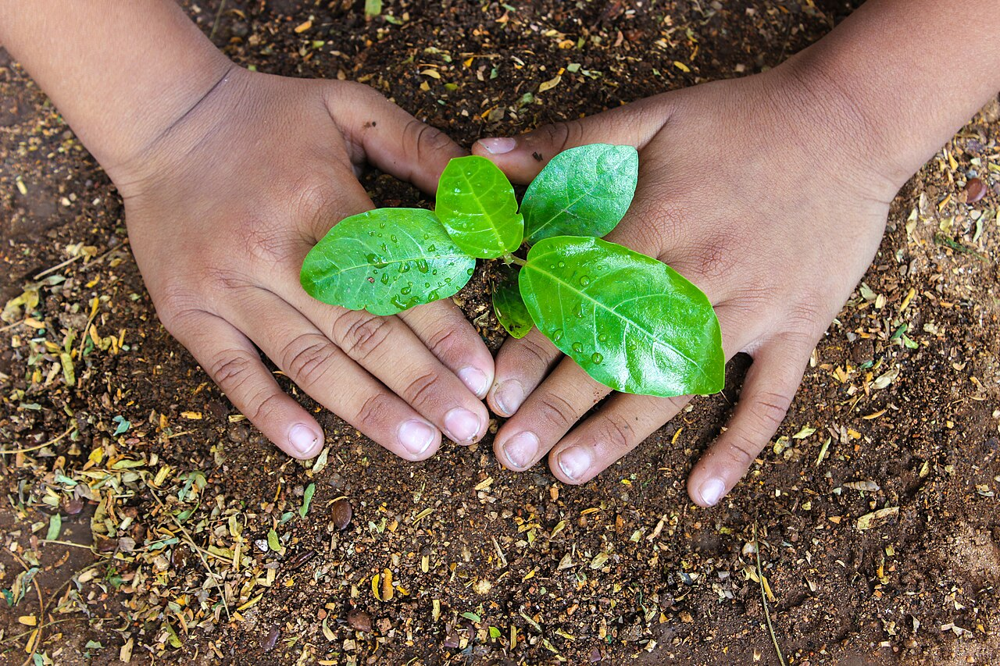

Bienvenidos a Ambientalisima
Ambientalisima es una organización sin fines de lucro dedicada a la conservación del medio ambiente y la promoción de prácticas sostenibles. Nuestra misión es proteger los ecosistemas naturales, fomentar la educación ambiental y promover la acción comunitaria para un futuro más verde y saludable. A través de proyectos de reforestación, campañas de concientización y programas educativos, trabajamos para crear un impacto positivo en nuestro planeta y asegurar un legado sostenible para las generaciones futuras.

Nuestros objetivos
- Conservar la biodiversidad y los ecosistemas naturales.
- Promover la educación ambiental y la conciencia pública.
- Fomentar prácticas sostenibles en comunidades y empresas.
- Realizar proyectos de reforestación y restauración ecológica.
- Colaborar con otras organizaciones para amplificar nuestro impacto.
Unite a nosotros
Si compartes nuestra pasión por el medio ambiente y querés contribuir a un futuro más sostenible, ¡unite a Ambientalisima! Podés participar como voluntario en nuestros proyectos, hacer donaciones para apoyar nuestras iniciativas o simplemente difundir nuestro mensaje en tus redes sociales. Juntos, podemos marcar la diferencia y construir un mundo más verde y saludable para todos.